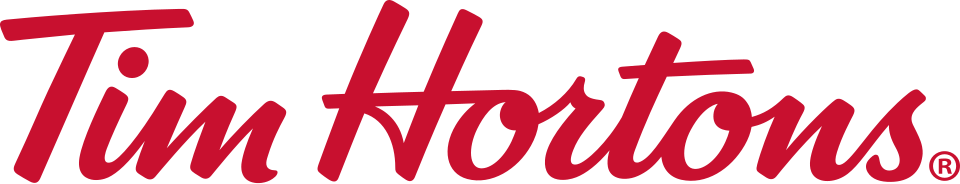

팀홀튼 Tim Hortons
팀홀튼(Tim Hortons)은 커피와 도넛을 판매하는 캐나다의 커피 전문점이다. 캐나다 전역에 매장을 운영하는 대형 패스트푸드 음식점이기도 한다.
최종 업데이트

팀홀튼은 어떤 브랜드인가
팀홀튼은 커피와 도넛을 중심으로 음료와 간식을 판매하는 캐나다의 커피 전문점이다. 캐나다에서 가장 큰 패스트푸드 음식점이며, 온타리오주에 매장이 상대적으로 많지만 다른 주에도 비교적 고르게 분포한다.
슈거메이플 나뭇잎 모양을 활용한 마크와 Tim's 표기를 사용하며 캐나다를 상징하는 기업 중 하나로 언급된다. Restaurant Brands International을 모기업으로 두며 본사는 토론토에 소재한다.
대한민국에서는 비케이알이 브랜드를 관리하며 2023년 신논현역점을 시작으로 영업을 개시했지만 가격 정책과 일부 매장 폐점으로 비판과 우려를 받았다.
팀홀튼은 어떻게 시작되고 성장했나
아이스하키 선수 팀 호턴이 1964년 5월 17일 온타리오주 해밀턴에 자신의 이름을 붙인 도넛 매장을 열면서 시작했다. Ron Joyce는 1965년 Ottawa Street의 1호점을 관리했고, 1967년 2개의 새 매장을 개점한 뒤 팀 호턴의 사업 파트너가 되었다.
팀 호턴이 1974년 교통사고로 사망하자 Ron Joyce는 100만 달러에 회사 지분과 회사가 소유한 40개 매장의 소유권을 인수했다. 이후 사업을 빠르게 확장해 1991년 500호점을 열었다.
1995년 웬디스에 매각된 뒤 2006년 분리됐으며, 2014년 Restaurant Brands International이 110억 달러에 인수했다.
팀홀튼의 브랜드 아이덴티티는 무엇인가
커피와 도넛을 중심으로 한 전국적 매장망과 슈거메이플 나뭇잎 표식을 통해 캐나다와의 연관성을 드러내는 브랜드이다.
팀홀튼의 대표 제품과 서비스는 무엇인가
주요 판매 품목은 커피와 도넛이며 다양한 음료와 간식 메뉴를 함께 구성한다. 대표 메뉴인 아이스 캡은 시그니처 커피 베이스와 크림을 슬러시처럼 갈아 만든 블렌드 음료이다.
더블더블도 대표적인 커피 메뉴이며, 대한민국에서는 공식적으로 대한민국식 믹스커피에 비유한다. 지역사회 어린이를 위한 스마일 쿠키도 판매하며, 1996년 온타리오주 해밀턴 어린이 병원에 판매 수익금을 기부한 뒤 캐나다 전역의 매장과 지역 병원 및 자선단체로 활동을 확대했다.
팀홀튼은 지금 어떤 상태인가
팀홀튼은 Restaurant Brands International을 모기업으로 두며, 2018년 본사를 오크빌에서 토론토로 이전했다. 대한민국에서는 비케이알이 브랜드를 관리하고 버거킹 앱 계정을 팀홀튼 앱과 연동한다.
2023년 12월 신논현역점으로 대한민국 시장에 진출했으나 가격 정책으로 비판을 받았고, 인천 청라점은 개점 1년 1개월 만인 2025년 5월 31일 폐점했다.
팀홀튼 로고는 어떻게 변해왔나
자주 묻는 질문
팀홀튼는 어느 나라 브랜드인가요?
팀홀튼는 캐나다의 식음료 브랜드입니다.
팀홀튼는 언제 설립되었나요?
팀홀튼는 1964년 설립되었습니다.
팀홀튼의 브랜드 아이덴티티는 무엇인가요?
커피와 도넛을 중심으로 한 전국적 매장망과 슈거메이플 나뭇잎 표식을 통해 캐나다와의 연관성을 드러내는 브랜드이다.
팀홀튼의 대표 제품은 무엇인가요?
주요 판매 품목은 커피와 도넛이며 다양한 음료와 간식 메뉴를 함께 구성한다.
팀홀튼는 어느 기업이 소유하고 있나요?
팀홀튼은 Restaurant Brands International을 모기업으로 두며, 2018년 본사를 오크빌에서 토론토로 이전했다.
팀홀튼의 창업자는 누구인가요?
팀홀튼의 창업자는 팀 호턴, Ron Joyce입니다(위키데이터 기준).
팀홀튼의 본사는 어디에 있나요?
팀홀튼의 본사는 오크빌에 있습니다(위키데이터 기준).
출처와 검증
팀홀튼 관련 참고: 공식 웹사이트 · 위키데이터 Q175106 · 한국어 위키백과 · 영어 위키백과. 브랜드명은 한글과 원어를 함께 표기하되 데이터에 없는 표기는 만들지 않습니다. 기원 국가·설립연도는 검수된 정의문에서 확인된 값을 우선하고, 없을 때만 공식 웹사이트 URL이 일치하는 위키데이터 개체의 값을 씁니다. 위키데이터 값은 2026-09-20 기준입니다.